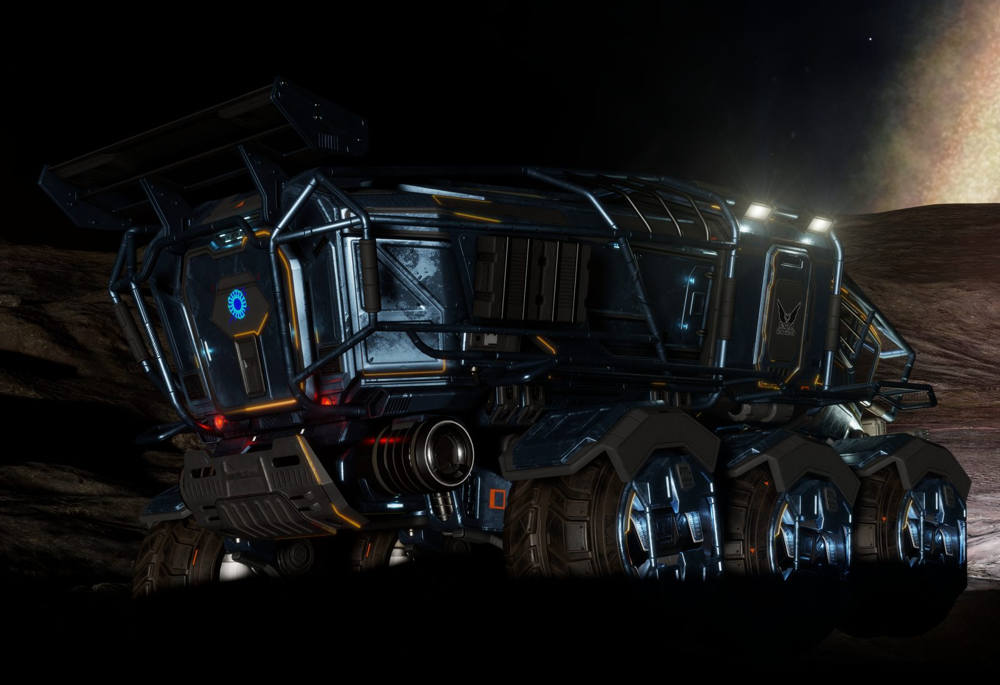

EDSMT
Map surface mining for the Rhino without typing a single coordinate. It reads your journal, so the system, the body, your latitude and longitude and the commodity all come from the game.
Free · No account · Every find goes on the community map
Build 1.10034 Elite Dangerous 4.4.1.1 Windows Source: github.com/TheAnnouncer/EDSMT (GPL-3.0)

Keys, in the order you work.
In the middle of the signal. Logs the signal and sets the centre of the survey. No commodities needed — they come with the deposits.
At the location's edge line. Hold the mineral scanner all the way out and while you map. The border: the map and the scope shade the ground you have swept inside it.
Stood on a deposit. One press per deposit, with all four boxes filled in — commodity, rigs, amount and density — so what goes on the shared map can be trusted.
Rig 1 to rig 6 down. Each rig its own key, drawn on the scope and the compass in the colour of what it is mining. The first one down starts your earnings session.
That rig back up. The last one up ends the session and stands every rig warning down. On a keyboard without AltGr it is Ctrl+Alt.
Back at a deposit you marked. Writes the Amount going down, or the rig count you now know, onto it instead of adding a second copy.
Every rig up at once. Clears them from the scope and the compass, and every rig warning with them.
Overlay on and off. It only comes up while you are driving a Rhino — not in the ship, on foot or in the Nomad.
None of these is used by any of the game's own control schemes. Every one can be changed in Settings.
A deposit records where it is. How far it is and which way to turn are worked out live from wherever you happen to be standing — which is the number you want with your hands on the wheel, and it means nothing has to be pressed before a find can be recorded.
The keys are system-wide, so they work with the game in front, and the position is taken the instant you press one. Every one can be changed in Settings.
The overlay
A compass tape across the top of your screen showing which way every recorded deposit is, how far, and how many rigs it takes.
Anything behind you pins to the near edge with a turn arrow rather than silently vanishing — which is the failure that makes an overlay useless the moment you drive past something. Labels that would collide stack onto separate rows, because deposits cluster, and a cluster is exactly when there is most to read.
It is one of six boxes — compass, scope, targets, status, the deposit you are on, and a guide that shows the next step and its key — each switched on or off on its own. Unlock to drag them where you want, lock again and clicks pass straight through to the game.
No overlay of any kind can draw over a game in exclusive fullscreen. That is DirectX, not this app.
Density and amount are different questions
A site can be high density and depleted at the same time: rich, empty today, worth coming back to. One number cannot say that.
Press MINED OUT and the deposit
drops to Depleted with the note stamped
Mined 10/09/2026 01:05. Press it again next month and it
adds a line, so the site keeps its history.
It is not a delete. The deposit stays on the map, because "empty as of the tenth" is worth more to the next commander than nothing at all.
How rich it is. Low / Medium / High. Does not change.
How much is left. Depleted / Low / Medium / High. Walks down as you work it.
What nobody else is collecting
Which worlds hold what
Planet class, gravity, atmosphere and volcanism ride with every deposit. Nobody has published which surface deposits favour which bodies, because nobody has been collecting both halves at once.
Where it actually sells
Find answers it from a verified upstream — nearest first, with
the distance in light years on every row, and a station in a system
nobody has placed reads "-" rather than sorting to the top as the
closest thing in the galaxy. Earnings looks up any system by name and
lists the last known price of each commodity at every market there,
with when it was seen. Your own journal fills the gap those
services leave: the game writes Market.json every time you
open a market.
The journal schema itself
Frontier have not published the surface-mining events. Rather than
guess names, EDSMT captures the first example of each to
journal-mining-events.log. Posting that to the forums is
how the schema gets written down for every tool that follows.
What changed
Fixed — settings lost when you built or updated
Every time the build was made on a PC with EDSMT's data on it, one of the checks wrote its test settings over the real ones: overlay placement, layout, theme and keys went back to the defaults. Every check now runs in a folder of its own, and settings can no longer be lost for good:
- Earlier settings (Settings → Your data): EDSMT keeps a dated copy of your settings whenever something that matters changes — the last thirty. Pick one and press Put these back: overlay placement, layout, theme, keys, the lot, at once.
- Restore from a backup now puts the settings in the zip back as well, straight away, instead of leaving the old ones in charge until a restart.
- A backup now carries the ground you have swept and the survey border of every body, and the dated settings copies, as well as your finds.
New — Where to land remembers every system
A system honked in an earlier session showed "0 bodies scanned". EDSMT now reads all your older journals once, in the background, and remembers every body they describe; asks the public body database, through the community server, for systems your own journals have not covered; and keeps every new scan as it happens. Where to land says how many came from the public database, and while it is still reading your older journals. Your own journal always wins over the public database.
New — your own Discord channel
Settings → Sharing → Discord: paste a channel's webhook and every find you mark, and a summary of every Rhino session — tonnes, time, credits, Cr/hr, t/hr, where you sold — is posted there as you play. Send a test message checks it. The webhook stays behind dots, and nobody in the channel is ever pinged by anything typed.
New — rigs
- Rigs survive a restart. They used to be held in memory: close EDSMT and every rig was gone. They are written down as they change.
- TOO CLOSE TO RIG n on the boxes inside the rig spacing of one of your own rigs, so you know before you drop the next one; dropping one there anyway is marked and warned about. COLLECT RIG n, in cyan, when you are back at a rig that has been working.
- A rig is marked where it lands: 7 m behind the cockpit (a setting), not where you are sitting.
- A Rhino docking in the ship takes its own rigs off the scope (a setting); the other Rhino's stay.
- Double-click a rig on the map to put right what it is mining, or to pick it up on its own.
- A rig dropped on somebody else's shared find — or on the one you picked — is on their commodity, not on whatever the box last said.
- Past 6 km the rigs are forgotten, and every warning with them. Out of the Rhino — in the ship, on foot — no rig warning goes up at all: the distance from there is not the Rhino's.
- Shared rig layouts: when your rigs come up, how they were laid out on the deposit — and the edge and pins, if you used the rig planner — goes on the community map. On a deposit with no plan of your own, the best layout other commanders used shows as SHARED PIN pins on the scope.
New — and the rest
- Find has a Distance column: how many light years each site and deposit is from where you are, whether or not you picked a radius.
- A note on every control: rest the mouse on anything for what it does. Settings → Basics turns them off.
- A first-run tour of the main window, once; Settings → Basics runs it again. Never over the game.
- Settings in tabs: Basics, Overlay, Keys, Rigs, Sharing, Your data, About.
- SRV FUEL LOW on the boxes when the game says the SRV is low.
- t/hr in Earnings: tonnes an hour, beside Cr/hr.
- In the Rhino with the overlay off, EDSMT says how to turn it on — on your first three sessions only.
- Installed to C:\EDTools\RadioRaxxla\EDSMT, with a Radio Raxxla folder in the Start menu. An older install is moved there by the update: only its own program files are taken out of the old folder, and your finds and settings, which live elsewhere, are not touched.
Fixed
- Finishing the guide left its box on the overlay, frozen on the last card. It goes as the guide does.
- A box's suggestion list stayed open after a click on the map or a panel. A click anywhere else, or a second click in the box, shuts it.
- Radio Raxxla staff can take a wrong find, or a wrong site, off the community map from Find. What is removed is kept, with who removed it.
Questions
Do I need an account, or to log in with Frontier?
No. EDSMT reads the journal files the game writes on your own PC for tools like this one. There is no account, and a Frontier login would not tell it anything about surface mining that the journal does not.
Does it touch the game?
No. It reads the game's journal and status files and draws its boxes over the top. It never reads the game's memory, never injects anything and never presses a key in the game for you.
The boxes do not show over the game.
Set Elite to borderless or windowed. Nothing can draw over exclusive fullscreen — that is DirectX, not EDSMT.
A key does nothing.
Another program got it first — graphics-card overlays, Discord and Steam all grab keys. Pick another in Settings; EDSMT tells you when a key is taken. On UK and European keyboards AltGr is Ctrl+Alt to Windows, which is why the pick-up keys read AltGr there and Ctrl+Alt on a US keyboard.
Alt+3 will not mark the deposit.
All four boxes have to be filled in: commodity, rigs, amount and density. The scanner's density counts when the game names one. Half-filled finds were reaching the shared map without the two things somebody deciding whether to fly there needs most.
Can I keep my finds to myself, or share them only with my squadron?
No. Every find goes on the community map for everybody, and everybody's comes back to you under Find. That is the whole point of it: there are around 400 billion systems, and a map only some people can see never gets filled in. Your CMDR name on your finds is your choice.
What is shared, and what stays on my PC?
The deposits you mark and the prices at markets you open go on the community map, with your commander name only if you choose. Your notes, sessions, settings and everything else stay in your own AppData folder.
When does an earnings session start and stop?
It starts with your first rig down, or your first tonne refined in the Rhino, or Start session. It ends when every rig is back up, when the Rhino comes back aboard, or on End session. Pause stops the clock for a break or the drive to a station. Only what the Rhino dug up is counted — cargo you bought or hauled is left out.
Where do the sell prices come from?
Three places, side by side: the game's own galactic average, read off any commodity market you open (an estimate until you do); prices EDSMT users have read at stations; and a public market index, for the best price within the distance you pick and the price in the system you are in.
What are the rig planner and the wing link?
Two betas, both off until you switch them on in Settings. The rig planner: press AltGr+2, drive the deposit's edge back to where you started, and a pin goes on the scope for each rig that fits, 78 m apart by default — the community's working figure, which you can change. The wing link: everyone types the same six-character code and sees each other's Rhinos and rigs on the scope — friends on one body, or crew off one ship with more than one Rhino. The server forgets you two minutes after you stop.
The words in the boxes are too small.
Settings has a text size for each box on its own, from 80% to 200%, without making the box itself any bigger. Unlock to drag a box or resize it by its corner.
How do I update, and do I back up first?
EDSMT tells you when there is a new version and installs it on one click. Your deposits, sessions and settings are kept. Back up anyway, every time: from 1.10033 EDSMT does it for you before it installs, to Documents › EDSMT backups, and Settings › Back up now makes a copy whenever you like.
Does it work on GeForce NOW?
Not the live parts. On GeForce NOW the game runs on NVIDIA's machine, so the journal and status files EDSMT reads are written there and never reach your PC. That is true of every tool that reads the journal.
Windows says it protected my PC.
A new download trips SmartScreen until enough people have run it. More info, then Run anyway. The source is here too if you would rather read it first.
Install
EDSMT-Setup.exe is a normal installer wizard — Start menu entry, optional desktop shortcut, a proper line in Add/Remove Programs. It installs for you only, so it never asks for admin.
If you would rather not install anything, EDSMT.exe is the same program as one portable file. Save it anywhere and double-click it.
"Windows protected your PC" — the build is not code signed, because a certificate costs several hundred a year and this is free. More info → Run anyway.
Your finds live in
%LOCALAPPDATA%\RadioRaxxla\EDSMT, not the program folder,
so updating never touches them. There is a backup button in Settings
that writes one dated zip.
What leaves your machine, and what never does
- Every find goes on the community map. Position, commodity, how rich, and market prices — that is what the map is made of.
- Your CMDR name is optional. Share anonymously if you prefer.
- There is no account and no sign-up.
- No personal data is stored — a deposit is a position, a commodity and a date.
- It is GPL-3.0. The source is on this page and on GitHub, so you can read exactly what it sends and when.